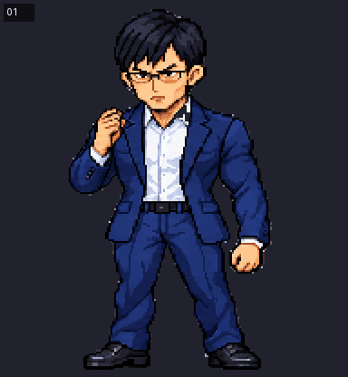
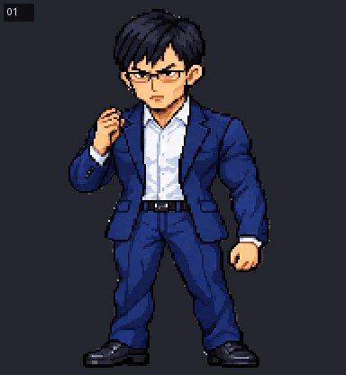
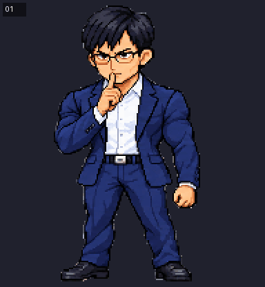
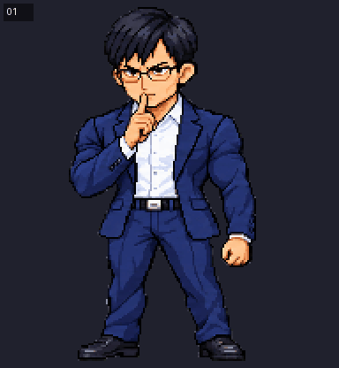
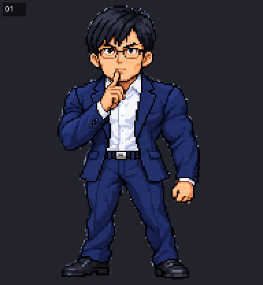
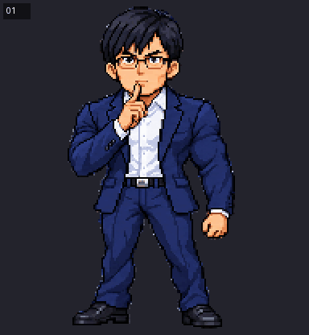
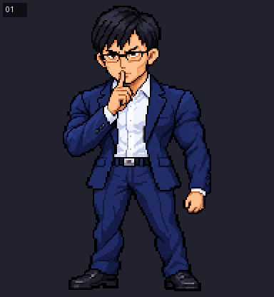

Look 与 Failed 以下图片仅作失败证据，不再是待审候选。没有部署。此前 11 项技术检查不构成视觉通过。
白边只处理 Feng Waving / Review / Look。Gu 已通过素材不改。GIF 背景用于观察残边，PNG 源仍透明。 Failed 本轮只有四张关键姿势；姿势通过后才补齐八帧，不能把此 GIF 当作最终动作连续性验收。
左右拖拽：自检 FAIL，停止当前局部变形方案。固定左右切分切坏了交叉裤腿。 未接入、未覆盖原片；不以新失败结果作为下轮基础。 Gu 失败证据 · Feng 失败证据。 后续需人工确认“前脚接地 / 后脚蹬离 / 摆动经过 / 换脚接地”四个腿部姿势，不能继续横切挪动原腿。
| 动作 | 上轮素材 | 本轮候选 |
|---|---|---|
| Feng Waving · 白边/衣领及腰带恢复 用户通过 · 已锁定 |  |  GIF · 逐帧图 · 源像素对照 / 差异 · 高对比背景放大 |
| Feng Review · 仅外轮廓去白边 用户通过 · 已锁定 |  |  GIF · 逐帧图 · 源像素对照 / 差异 · 高对比背景放大 |
| Feng Look · 保留已通过肩部动作，修外围白边 用户否决 · 撤回 / 禁止使用 |  |  GIF · 逐帧图 · 源像素对照 / 差异 · 高对比背景放大 |
| Feng Failed · 01/04/05/08 关键姿势，不是完整八帧动画 用户否决 · 撤回 / 禁止使用 |  GIF · 逐帧图 · 源像素对照 / 差异 · 高对比背景放大 |